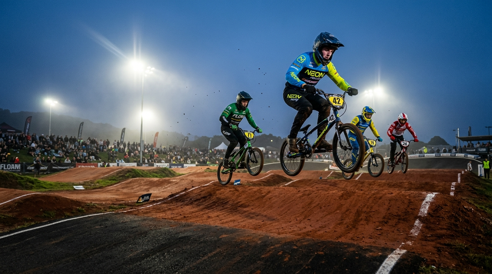
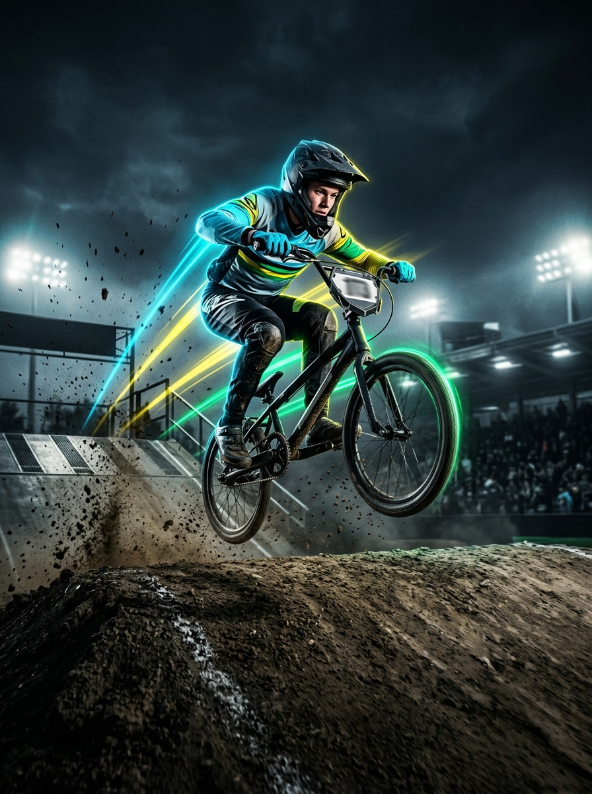

DOMINA EL PARTIDOR.
VUELA EN LA PISTA.
Formamos pilotos de Bicicross (BMX Racing) desde los 2 años hasta categoría Élite y Master. Técnica de salida en Pro-Gate, paso de morros, peraltes, disciplina y adrenalina en un ambiente 100% seguro y familiar.
PARTIDOR BMX PRO-GATE
Practica tu salida en el partidor igual que en competencia. Presiona "Iniciar Partidor" y luego "¡PEDALEA!" apenas se encienda la luz verde:
Niveles y Categorías BMX
El programa progresivo ideal para cada piloto: desde sus primeros pasos sin pedales hasta vuelos y competencia oficial en Rin 20" y Cruiser 24".
Balance / Strider
Iniciación temprana en bicicletas de impulso (sin pedales) dentro del circuito de morros bajos.
- ✓ Equilibrio dinámico y coordinación motriz.
- ✓ Paso seguro por morros y peraltes pequeños.
- ✓ Adaptación divertida a la rampa de salida.
Semillitas Iniciación
Transición al pedal de pie y fundamentos técnicos del Bicicross en pista oficial.
- ✓ Posición de ataque (pedales nivelados de pie).
- ✓ Técnica de bombeo (Pumping) en rectas.
- ✓ Equilibrio y salida básica desde el Partidor.
Novatos Desarrollo
Dominio completo del circuito, velocidad en curvas y preparación para válidas estadales.
- ✓ Absorción de mesetas, dobles y rítmicos.
- ✓ Trazada de alta velocidad en peraltes (Berms).
- ✓ Salidas explosivas al sonido del Pro-Gate.
Expertos Selección
Alto rendimiento para corredores que representan a Los Boyacá en válidas estadales y nacionales.
- ✓ Manuales profundos, vuelos y despejes al límite.
- ✓ Estrategia de carrera en mangas de 8 pilotos.
- ✓ Preparación física de potencia y sprints.
Open, Élite y Master Adultos
Entrenamiento especializado para jóvenes mayores de 17 años, categoría Championship y adultos Master que buscan perfeccionar su técnica en pista, mejorar tiempos por vuelta y competir al máximo nivel.
¿Qué Talla de Bici BMX Necesita tu Hijo?
En el Bicicross las bicicletas Rin 20" vienen en distintas medidas de cuadro (Top Tube) y ancho de caucho según la estatura del piloto. Ingresa su estatura en centímetros para calcular su talla exacta:
TALLA RECOMENDADA:
Junior BMX Race
Tubo Superior (Top Tube): 18.25" – 19.0" • Rueda: Rin 20" x 1-1/8"
Para pilotos de 7 a 9 años. Bielas de 150mm a 155mm.
| Talla Cuadro | Estatura Piloto | Edad Aprox. | Tubo Superior | Medida de Caucho |
|---|---|---|---|---|
| Balance / Micro Mini | 85 cm – 102 cm | 2 a 4 años | 16.5" – 17.5" | Rin 12" / 18" / 20x1-1/8" |
| Mini | 102 cm – 118 cm | 5 a 7 años | 17.5" – 18.0" | Rin 20" x 1-1/8" (Fino) |
| Junior | 118 cm – 135 cm | 7 a 9 años | 18.25" – 19.0" | Rin 20" x 1-1/8" o 1-3/8" |
| Expert | 135 cm – 150 cm | 9 a 12 años | 19.25" – 20.0" | Rin 20" x 1-3/8" |
| Expert XL / Pro | 150 cm – 164 cm | 12 a 15 años | 20.25" – 20.5" | Rin 20" x 1.75" (Ancho) |
| Pro XL / Pro XXL | 164 cm – 185+ cm | +15 años y Adultos | 21.0" – 21.75" | Rin 20" x 1.75" / Cruiser 24" |
PISTA DE BICICROSS LOS BOYACÁ
Nuestro circuito cuenta con partidor oficial de 8 carriles, rectas rítmicas de morros, mesetas de seguridad para aprendizaje progresivo y peraltes compactados para entrenar trazadas reales de competencia.
Pista de Bicicross Los Boyacá
Sector Los Boyacá, Barcelona - Edo. Anzoátegui.
Lunes a Viernes
Tarde: 4:00 PM a 7:00 PM (Por niveles)
Distribución de Turnos en Pista:
INDUMENTARIA OBLIGATORIA
En la Escuela de Bicicross Los Boyacá la seguridad es prioridad. Para ingresar a rodar en la pista todo atleta debe portar:
1. Casco Integral (Full Face)
Con protector de mentón abrochado en todo momento (en Balance se permite casco infantil certificado).
2. Guantes Completos
Guantes de ciclismo/BMX de dedos completos para un agarre firme de los puños.
3. Jersey Manga Larga
Suéter deportivo manga larga y coderas para proteger los brazos ante cualquier roce.
4. Pantalón Largo + Rodilleras
Pantalón de BMX o mono resistente con rodilleras y zapatos deportivos cerrados.
¿Cómo llegar a la Pista Los Boyacá?
Sector Boyacá, Barcelona, Estado Anzoátegui. Estacionamiento y tribuna familiar frente al circuito.
Galería y Acción en Pista
Así se viven los entrenamientos, salidas de partidor y válidas en la Escuela de Bicicross Los Boyacá. Toca cualquier imagen para ampliarla.

Vuelos en Primera Recta
Práctica de absorción y salto bajo luces del circuito.

Potencia desde el Partidor
Técnica de Snap y reacción al semáforo oficial.
Semillero y Familia BMX
Formando desde los 2 años con disciplina y compañerismo.
Staff Técnico y Directiva
Guías apasionados por el Bicicross dedicados a formar atletas íntegros, veloces y disciplinados.
Entrenador Principal
Especialista en técnica avanzada de BMX Racing, táctica de partidor, saltos pro y preparación de la selección de competencia.
Iniciación Infantil
Encargado de la adaptación motriz, pérdida del miedo a los morros, equilibrio sin rueditas y primeros piques en la pista.
Desarrollo & Potencia
Entrenamiento de cadencia, explosividad en los primeros 30 metros, coordinación y prevención de lesiones para jóvenes y adultos.
Comité Los Boyacá
Atención a representantes, control de inscripciones, logística de válidas, mesa técnica y mantenimiento de la pista.
COPA LOS BOYACÁ
CAMPEONATO DE BICICROSS & BALANCE
COPA LOS BOYACÁ BMX RACE
Válida Invitacional de Bicicross y Bike Balance
Haz clic en el afiche para ampliarlo. Asignación automática de categoría por Año Calendario (2026), registro de número de placa, sorteo automático de mangas de 8 carriles y reporte de Pago Móvil en línea.
Calendario BMX del Mes
Clínicas técnicas, fogueos con partidor y competencias oficiales en la pista Los Boyacá.
Copa Los Boyacá BMX
Mangas clasificatorias y finales en todas las categorías de año calendario. Premiación para los podios y medallas de participación para Semillitas y Balance.
Clínica de Partidor & Snap
Sesión intensiva enfocada en postura sobre el partidor, tiempo de reacción al semáforo y potencia en los primeros tres pedalazos hasta el primer salto.
Clínica de Manuales y Peraltes
Aprende a mantener la rueda delantera en el aire sobre los rítmicos (Manual) y a entrar cerrado y salir abierto a máxima velocidad en los peraltes.
¡Recibe las convocatorias de nuestras Válidas BMX!
Déjanos tu correo o número de WhatsApp para avisarte de próximas válidas, clínicas y entrenamientos especiales.
Preguntas Frecuentes (FAQ)
Resolvemos todas tus dudas antes de traer a tu hijo o hija a su primera práctica en la Pista Los Boyacá.